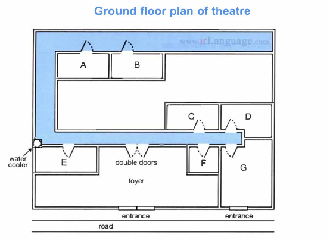

Questions 1–10
Complete the notes below.
Write ONE WORD AND/OR A NUMBER for each answer.
Enquiry about joining Youth Council
Example
Questions 11–20
New staff at theatre
Questions 11 and 12 Choose TWO letters, A–E.
Which TWO changes have been made so far during the refurbishment of the theatre?
Questions 13 and 14 Choose TWO letters, A–E.
Which TWO facilities does the theatre currently offer to the public?
Questions 15 and 16 Choose TWO letters, A–E.
Which TWO workshops does the theatre currently offer?
Questions 17–20 Label the plan below.
Write the correct letter, A–G, next to Questions 17–20.

Questions 21–30
Questions 21–26 Choose the correct letter, A, B or C.
Rocky Bay field trip
21 What do the students agree should be included in their aims?
22 What equipment did they forget to take on the Field Trip?
23 In Helen's procedure section, Colin suggests a change in
24 What do they say about the method they used to measure wave speed?
25 What mistake did Helen make when first drawing the map?
26 What do they decide to do next with their map?
Questions 27 and 28 Choose TWO letters, A–E.
Which TWO problems affecting organisms in the splash zone are mentioned?
Questions 29 and 30 Choose TWO letters, A–E.
Which TWO reasons for possible error will they include in their report?
Questions 31–40
Complete the notes below.
Write ONE WORD ONLY for each answer.
DESIGNING A PUBLIC BUILDING: THE TAYLOR CONCERT HALL
Introduction
The designer of a public building may need to consider the building's
- function
- physical and 31 context
- symbolic meaning
Location and concept of the Concert Hall
- On the site of a disused 32
- Beside a 33
- The design is based on the concept of a mystery
Building design
- It's approached by a 34 for pedestrians
- The building is the shape of a 35
- One exterior wall acts as a large 36
In the auditorium:
- the floor is built on huge pads made of 37
- the walls are made of local wood and are 38 in shape
- ceiling panels and 39 on walls allow adjustment of acoustics
Evaluation
- Some critics say the 40 style of the building is inappropriate